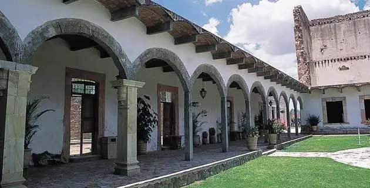
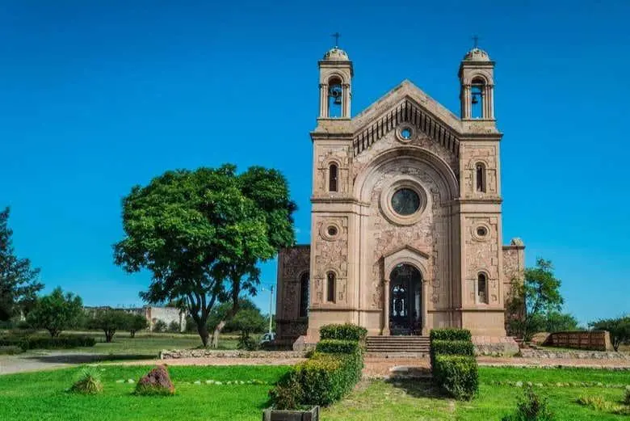
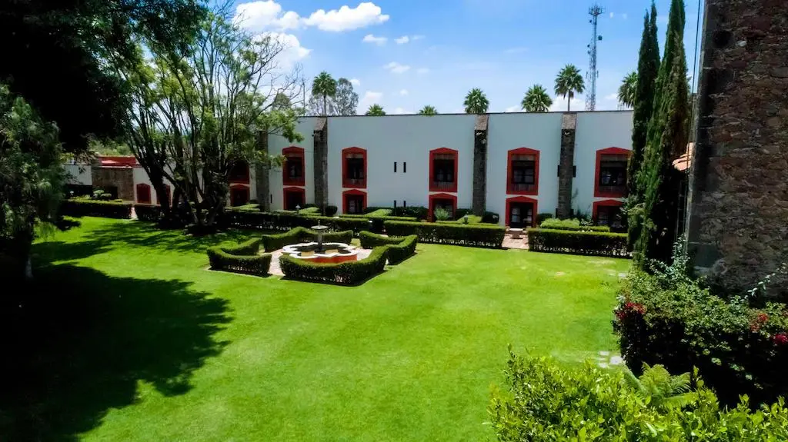

Un recorrido por la historia de la region viva.

Una de las más antiguas, con raíces religiosas.

Destacó por su ganadería y toros de lidia.
Importante productora agrícola y vitivinícola.

Origen en el siglo XVIII, evolucionó hacia comunidad ejidal.